搭建 ctfd 真的太难了💥❗ 整整一个月的阶段性尝试，换过环境搭建，按照过不同的教程搭建，总结一句话：不同的环境，不同的教程，不同的报错，真的累💦
kali 搭建
准备
-
安装好 docker 、docker-compose 、docker swarm
-
搭建需求下载
下载赵师傅改写的ctfd，赵师傅已经完成了镜像换源等操作
1
| git clone https://github.com/CTFd/CTFd --depth=1
|
下载frp
1
2
3
| wget https://github.com/fatedier/frp/releases/download/v0.29.0/frp_0.29.0_linux_amd64.tar.gz
tar -zxvf frp_0.29.0_linux_amd64.tar.gz
|
也可以直接访问链接下载然后解压上传
下载ctf-whale
1
| https://github.com/glzjin/CTFd-Whale
|
下载docker的frps
1
| https://github.com/glzjin/Frp-Docker-For-CTFd-Whale
|
以上除ctfd解压后请确保字母小写，并只有一级文件夹
安装步骤
1.docker 集群设置
输入以下命令
1
2
3
4
5
6
7
| docker swarm init //初始化 docker 群集
docker node ls //列出节点
docker node update --label-add name=linux-1 <节点 ID> //运行后无返回信息
以上命令均需要在 root 的身份下运行
|
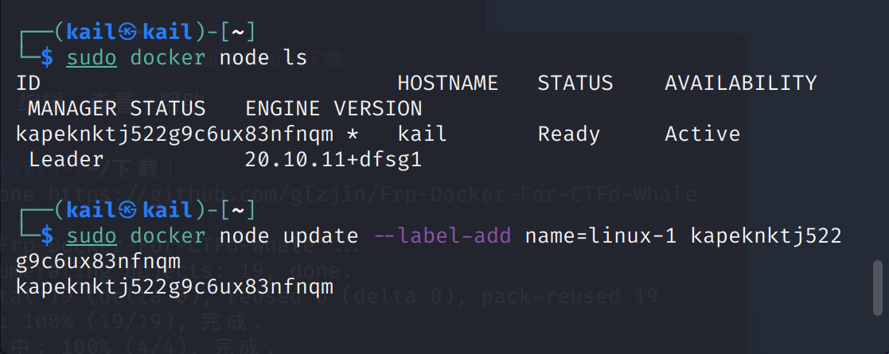
2.放入ctfd-whale
将解压的ctfd-whale改小写后放入/CTFd/CTFd/plugins
3.安装frps
**重点：**frp并不是安装在服务器上的， frpc 是在 ctfd 中的，frps 是在 docker中的。
进入所下载的 Frp-Docker-For-CTFd-Whale，在此文件夹下运行命令
1
2
3
4
5
| docker-compose up -d
docker ps //查看运行的 frps 容器
以上命令均要在 root 身份下运行
|
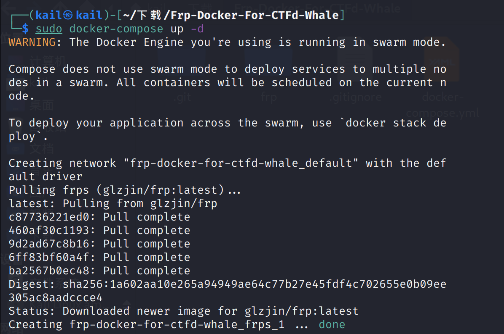
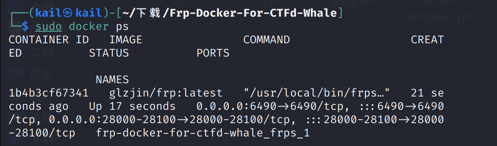
4.配置 ctfd
进入下载的 CTFd 文件，在 docker-compose.yml 同目录下创建文件夹 frpc，并将解压 frp_0.29.0_linux_amd64 文件夹中的
1
2
3
4
| frpc
frpc.ini
frpc_full.ini
LICENSE
|
放入新建的 frpc 中。
可能因为版本或者什么原因总之就是导致在 docker-compose 的时候反复报错，无法找到解决办法，寄了
这个教程是 ctfd 的作者，赵师傅的官方文档搭建步骤
前提
安装好了 git、python3、python3-pip
安装好了 docker、docker swarm、docker-compose
能够成功进行 git clone 命令
docker 已进行换源操作
安装步骤
初始化 CTFd
执行以下命令初始化集群
1
2
3
4
5
6
7
| docker swarm init //初始化 docker 群集
docker node ls //列出节点
docker node update --label-add name=linux-1 <节点 ID> //运行后无返回信息
以上命令均需要在 root 的身份下运行
|
执行以下命令下载 CTFd
1
2
| git clone https://github.com/CTFd/CTFd --depth=1 //将 CTFd 克隆至一级文件夹下
cd CTFd # 注：以下全部内容的cwd均为此目录
|
将文件 docker-compose.yml 的 version 属性进行修改
1
| version '2'` -> `version '3'
|
接着尝试命令docker-compose build，第一次 build 尝试了很多次，而且第一次成功时中途也有一些内容有问题，但是貌似不影响。
build 成功后尝试命令docker-compose up -d，显示如图界面并且能够成功访问到http://localhost （或8000端口）那就成功了。
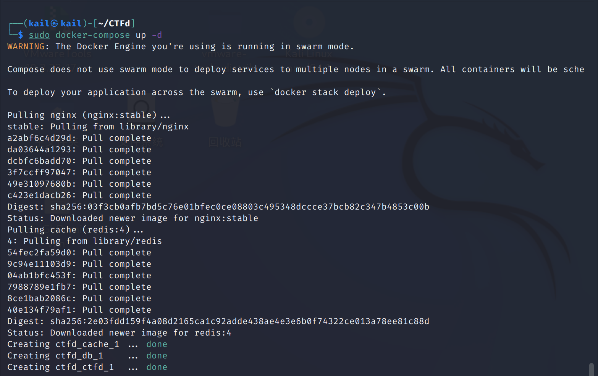
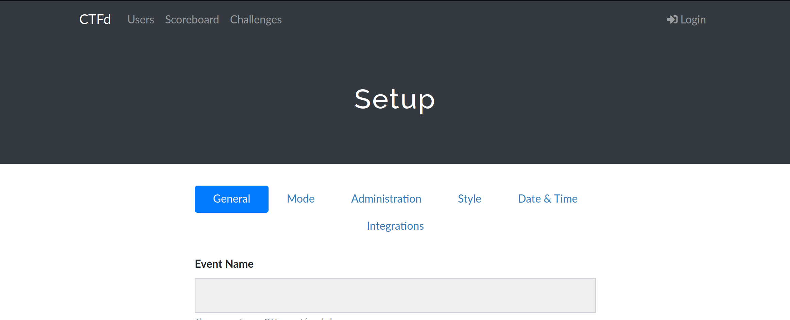
可以在这里对 CTFd 进行初始配置
配置 frps
在文件 docker-compose.yml 中添加如下配置
1
2
3
4
5
6
7
8
9
10
11
12
13
14
15
16
17
18
19
20
21
22
23
24
25
26
| services:
...
frps:
image: glzjin/frp
restart: always
volumes:
- ./conf/frp:/conf
entrypoint:
- /usr/local/bin/frps
- -c
- /conf/frps.ini
ports:
- 10000-10100:10000-10100 # 映射direct类型题目的端口
- 8001:8001 # 映射http类型题目的端口
networks:
default: # 需要将frps暴露到公网以正常访问题目容器
frp_connect:
networks:
...
frp_connect:
driver: overlay
internal: true
ipam:
config:
- subnet: 172.1.0.0/16
|
然后在 CTFd 文件夹的 conf 文件夹中创建 frp 文件夹，并新建 frps.ini 文件，在文件中填入如下内容
1
2
3
4
5
6
| [common]
# 下面两个端口注意不要与direct类型题目端口范围重合
bind_port = 7987 # frpc 连接到 frps 的端口
vhost_http_port = 8001 # frps 映射http类型题目的端口
token = your_token
subdomain_host = node3.buuoj.cn # 访问http题目容器的主机名
|
配置 frpc
同样，继续在 docker-compose.yml 文件中添加如下配置
1
2
3
4
5
6
7
8
9
10
11
12
13
14
15
16
17
18
19
20
21
22
23
24
25
26
27
| services:
...
frpc:
image: glzjin/frp:latest
restart: always
volumes:
- ./conf/frp:/conf/
entrypoint:
- /usr/local/bin/frpc
- -c
- /conf/frpc.ini
depends_on:
- frps #frps需要先成功运行
networks:
frp_containers: # 供frpc访问题目容器
frp_connect: # 供frpc访问frps, CTFd访问frpc
ipv4_address: 172.1.0.3
networks:
...
frp_containers:
driver: overlay
internal: true # 如果允许题目容器访问外网，则可以去掉
attachable: true
ipam:
config:
- subnet: 172.2.0.0/16
|
在和刚刚 frps.ini 的同一个文件夹 frp 中新建文件 frpc.ini 并填入以下内容
1
2
3
4
5
6
| [common]
token = your_token
server_addr = frps
server_port = 7897 # 对应 frps 的 bind_port
admin_addr = 172.1.0.3 # 请参考“安全事项”
admin_port = 7400
|
踩坑
docker-compose up -d 出错
按照赵师傅的使用指南来时，在执行docker-compose up -d命令时疯狂报错
1
2
3
4
5
6
7
8
9
10
11
12
13
14
15
16
17
18
19
20
21
22
23
24
25
26
27
28
29
30
31
32
33
34
35
36
37
38
39
40
41
42
43
44
45
46
47
48
49
50
51
52
| WARNING: The Docker Engine you're using is running in swarm mode.
Compose does not use swarm mode to deploy services to multiple nodes in a swarm. All containers will be scheduled on the current node.
To deploy your application across the swarm, use `docker stack deploy`.
Building ctfd
Sending build context to Docker daemon 27.16MB
Step 1/13 : FROM python:3.7-slim-buster
---> c2b8b72df8cd
Step 2/13 : WORKDIR /opt/CTFd
---> Using cache
---> 3dc01e1b5345
Step 3/13 : RUN mkdir -p /opt/CTFd /var/log/CTFd /var/uploads
---> Using cache
---> 61dc7349094e
Step 4/13 : RUN apt-get update && apt-get install -y --no-install-recommends build-essential libffi-dev libssl-dev git && apt-get clean && rm -rf /var/lib/apt/lists/*
---> Running in 69568ae5b0f2
Get:1 http://deb.debian.org/debian buster InRelease [122 kB]
Get:2 http://deb.debian.org/debian buster-updates InRelease [51.9 kB]
Get:3 http://deb.debian.org/debian buster/main amd64 Packages [7911 kB]
Err:4 http://security.debian.org/debian-security buster/updates InRelease
Could not connect to debian.map.fastlydns.net:80 (151.101.110.132). - connect (111: Connection refused) Could not connect to security.debian.org:80 (151.101.194.132). - connect (111: Connection refused) Could not connect to security.debian.org:80 (151.101.66.132). - connect (111: Connection refused) Could not connect to security.debian.org:80 (151.101.130.132). - connect (111: Connection refused) Could not connect to security.debian.org:80 (151.101.2.132). - connect (111: Connection refused)
Ign:3 http://deb.debian.org/debian buster/main amd64 Packages
Ign:5 http://deb.debian.org/debian buster-updates/main amd64 Packages
Ign:3 http://deb.debian.org/debian buster/main amd64 Packages
Ign:5 http://deb.debian.org/debian buster-updates/main amd64 Packages
Ign:3 http://deb.debian.org/debian buster/main amd64 Packages
Ign:5 http://deb.debian.org/debian buster-updates/main amd64 Packages
Ign:3 http://deb.debian.org/debian buster/main amd64 Packages
Ign:5 http://deb.debian.org/debian buster-updates/main amd64 Packages
Ign:3 http://deb.debian.org/debian buster/main amd64 Packages
Ign:5 http://deb.debian.org/debian buster-updates/main amd64 Packages
Err:3 http://deb.debian.org/debian buster/main amd64 Packages
Could not connect to debian.map.fastlydns.net:80 (151.101.110.132). - connect (111: Connection refused) Unable to connect to deb.debian.org:http: [IP: 151.101.110.132 80]
Err:5 http://deb.debian.org/debian buster-updates/main amd64 Packages
Unable to connect to deb.debian.org:http: [IP: 151.101.110.132 80]
Fetched 173 kB in 1min 10s (2473 B/s)
Reading package lists...
W: Failed to fetch http://security.debian.org/debian-security/dists/buster/updates/InRelease Could not connect to debian.map.fastlydns.net:80 (151.101.110.132). - connect (111: Connection refused) Could not connect to security.debian.org:80 (151.101.194.132). - connect (111: Connection refused) Could not connect to security.debian.org:80 (151.101.66.132). - connect (111: Connection refused) Could not connect to security.debian.org:80 (151.101.130.132). - connect (111: Connection refused) Could not connect to security.debian.org:80 (151.101.2.132). - connect (111: Connection refused)
W: Failed to fetch http://deb.debian.org/debian/dists/buster/main/binary-amd64/Packages Could not connect to debian.map.fastlydns.net:80 (151.101.110.132). - connect (111: Connection refused) Unable to connect to deb.debian.org:http: [IP: 151.101.110.132 80]
W: Failed to fetch http://deb.debian.org/debian/dists/buster-updates/main/binary-amd64/Packages Unable to connect to deb.debian.org:http: [IP: 151.101.110.132 80]
W: Some index files failed to download. They have been ignored, or old ones used instead.
Reading package lists...
Building dependency tree...
Reading state information...
E: Unable to locate package build-essential
E: Unable to locate package libffi-dev
E: Unable to locate package libssl-dev
E: Unable to locate package git
The command '/bin/sh -c apt-get update && apt-get install -y --no-install-recommends build-essential libffi-dev libssl-dev git && apt-get clean && rm -rf /var/lib/apt/lists/*' returned a non-zero code: 100
ERROR: Service 'ctfd' failed to build : Build failed
|
原来是自己 python3-pip 没有安装，比较新的 kali 里面有 docker-compose 但是没有 python3-pip 所以要自己装一下，以为安装了之后应该就没问题了，结果依旧报错，报错如图所示
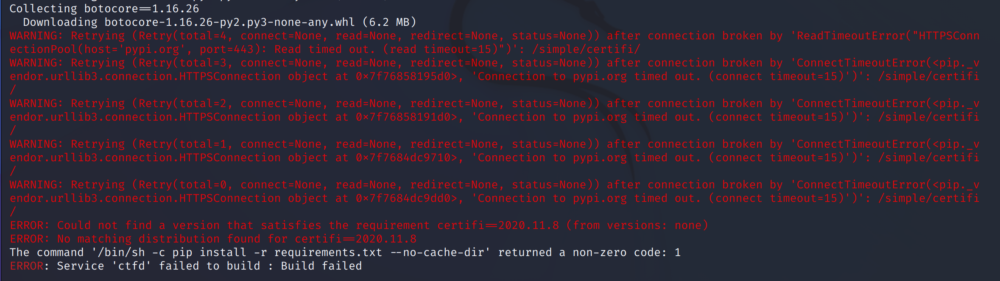
之后在尝试docker-compose up -d之前尝试了一下 docker-compose build发现不成功，在网上找方法，找到这个,但是执行第一个命令之后就G了
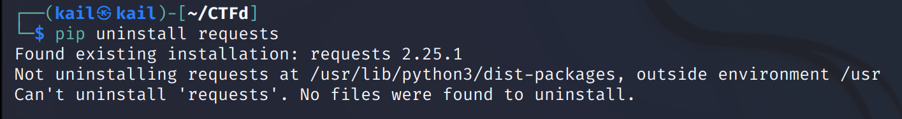头铁，又多次尝试docker-compose build又成功了，薛定谔啊。紧接着尝试docker-compose up -d也成功了。
frp 配置出错
frps 和 frpc 配置好后进行查看，发现出错
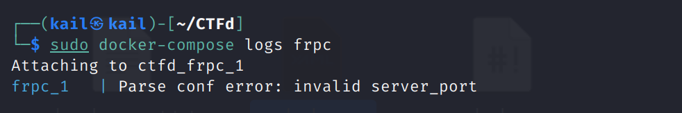
这是因为添加的内容中有注释，注释使用 # 表示的，但在 ini 文件中的注释并不是这个符号，所以将注释删除或使用正确的注释方式即可。
再次尝试，然后就是另一种报错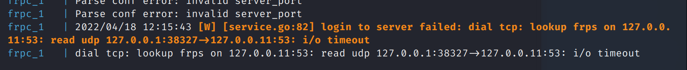
寄了，今天没解决，可能是因为 frp 没有下载在一级文件夹下
绝了，又寄了一天报错不一样了，不再是 i/o timeout 了，直接 connection refuse了
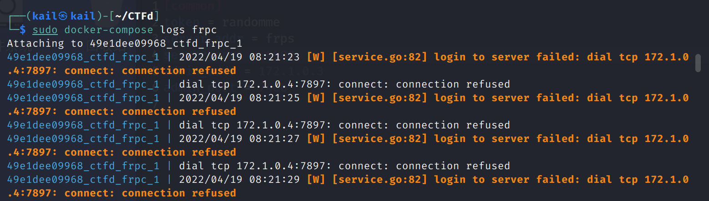
试了一下，只有把此处
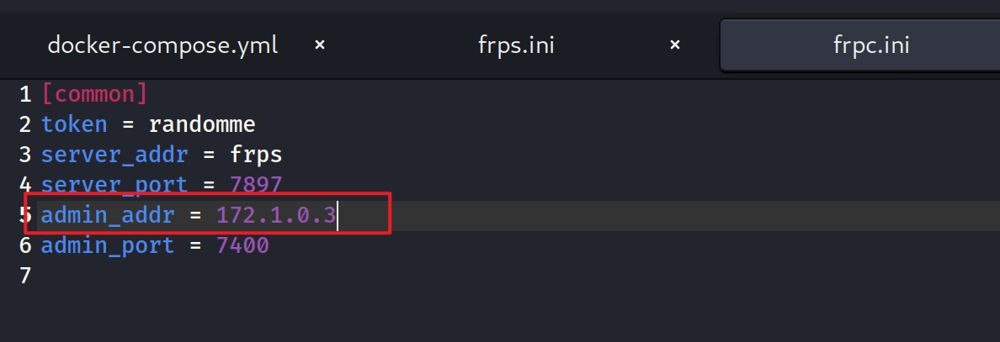
改成0.0.0.0 才可以用，但是官方文档上又建议不要改成 0.0.0.0，后面又直接尝试把 server_port 改成7400，好像也可以。最后按照这个方法修改了 ufw ，但是最后貌似还是没有开启 7897这个端口，但是好像是连上了
最后还是寄了，点界面没反应
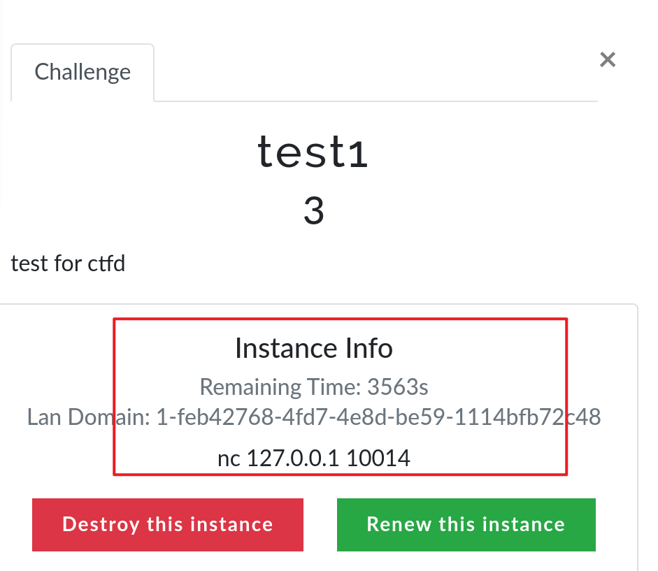
Ubuntu 搭建
教程一
采用的是赵师傅的官方文档搭建，过程大差不差，结果一模一样
报错
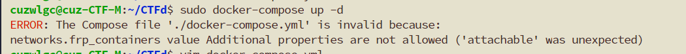
原因是因为 docker-compose 版本过低
-
按照网上方法卸载掉 docker-compose 时报错
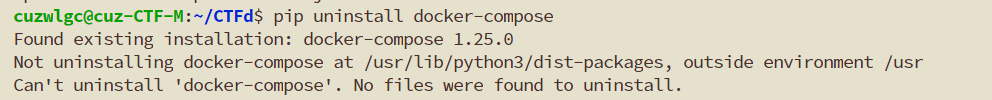
原因是并不是用 pip 安装的 docker-compose，需要使用sudo apt remove来卸载
-
使用 pip 安装 docker-compose 之后，执行 docker-compose 命令报错
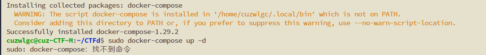
原因是因为没有添加到 path 中去
目前的操作：使用 pip 下载了docker-compose 然后将 docker-compose 移动到了 /usr/bin/ 文件夹中去了
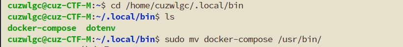
-
再次在 CTFd 目录下进行 docker-compose up -d 出错
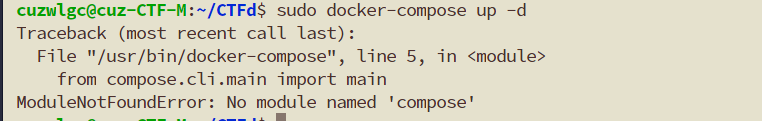
-
尝试把 docker-compose 里的内容用我的代替了一下，继续尝试部署
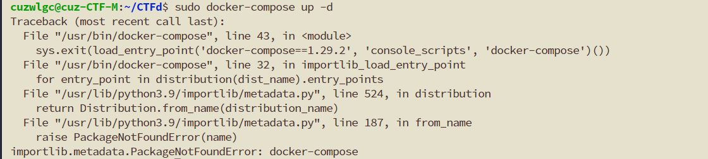
依旧是报错，感觉是 python3 的版本问题，看了一下也不知道怎么去升级 python3 这个版本，而且老俞的机子很奇怪，执行 apt-get update 和 upgrade 居然一个要更新的软件包都没有，估计是弄了权限设置，最后还是寄了
-
彻底玩完了，执行了一下 sudo rm /usr/bin/docker-compose 结果现在 bash 连 docker 也找不到了。

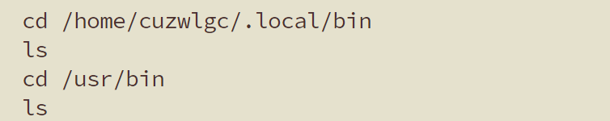
然后又重新下载了一下 docker-compose sudo apt-get install docker-compose，docker又可以用了，好奇怪
结局

教程二
是万师傅给的一个公众号里面的搭建教程，个人觉得相比于教程一来说条理更清晰些，比赵师傅的官方文档更详细些。
报错
错太多了，人错麻了，报错截图也没截
结局
最终结果是寄了，拿这个方案搭建过2回。
第一次倒在了离成功最近的地方：拉了 ctf 的容器，配置好了题目，但是死活访问不了。
第二次是创建好的 frpc 容器一直在反复重启中，查看了日志是因为所设置的端口拒绝连接，和在 kali 里的那个报错基本上感觉是差不多。
折腾不动了。
感想
搭建 ctfd 真的是很难，和计算机的环境，各种软件的安装版本，所下载的 ctfd 的版本都有密切的关系，这些不同的因素，不同的组合就会产生各种奇奇怪怪的报错。
对于报错的处理就是在网上疯狂寻找各种解决方案，但是有的解决方案对别人有用但是对你就不一定有效果，就只能自己慢慢试，慢慢琢磨。
搭建 ctfd 所涉及到的东西也有很多，docker、docker swarm、docker compose、docker network、frp… 想着，可能我懂一些原理或许对于报错的解决能有自己的处理方式，但是这个涉及到的东西太多了，对于我这个小白来说太难了😭
遗憾和坑：
-
以为自己有足够的耐心去搭建，然后能够成功，最后算是跪给 ctfd 了，每次一耗就是一天半天的，心也是真的累，人都快要搭吐了，感觉这辈子都不想再尝试搭着玩意了。
-
其实对于搭建中的 frp 和 Nginx 还是挺好奇的，没弄明白这两玩意在 ctfd 和 docker 里面的工作机制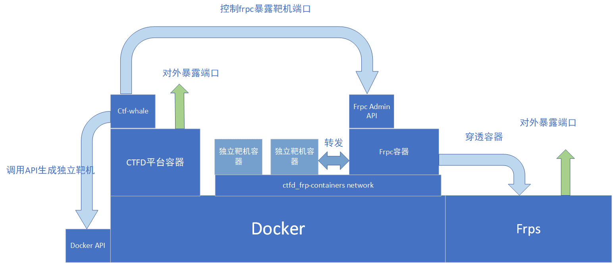
挖个坑以后再填吧，最近一段时间是不想再看到这玩意了，搭出内伤了。